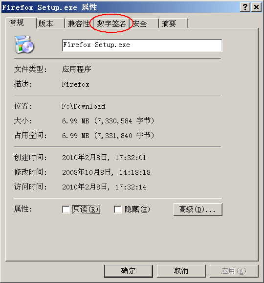
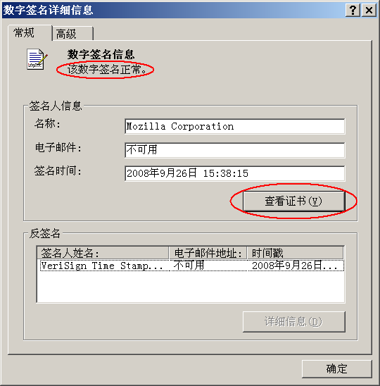
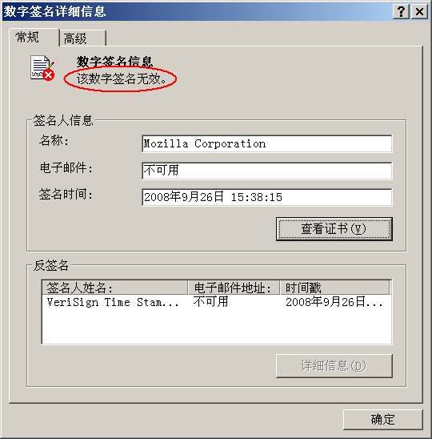

近期有网友在博客中留言，希望俺介绍散列值校验文件的知识。所以俺干脆写一篇“文件完整性校验”的扫盲教程。由于本文是扫盲性质，尽量不涉及太技术化的内容。
所谓的“完整性校验”，顾名思义，就是检查文件是否完整。那么，什么情况下会导致文件不完整捏？大概有如下几种情况。
1. 感染病毒
比方说你的系统中了病毒，病毒感染了某个软件安装包或者某个可执行程序。那么该文件的完整性就被破坏了。
2. 植入木马/后门
还有一种文件不完整的情况，是被别有用心的人植入木马或后门。比方说某些国内的软件下载站点，它们提供的 Windows 安装光盘镜像已经被安置了后门。
3. 传输故障
这种情况主要发生在网络下载时。因为网络传输是有可能发生误码的（传输错误），另外还有可能下载到快结束的时候断线（没下载全）。这些情况都会导致你下载的文件不完整。
如今的上网环境相比当年的 Modem 拨号，已经有明显改善。所以这种情况应该不多见了。
这里所说的“散列”是一种计算机算法，洋文叫做 Hash，有时候也根据音译称为哈希。
散列算法可以把【任意尺寸】的数据（原始数据）转变为一个【固定尺寸】的“小”数据（叫“散列值”或“摘要”）。
对于某个具体的散列算法，得到的散列值长度总是固定的。散列值的长度又称“摘要长度”。
以下是常见散列算法的摘要长度
1. 不可逆性
从刚才的描述看，散列似乎有点像压缩。其实捏，散列算法跟压缩算法是完全不同滴。压缩算法是可逆的（可以把压缩后的数据再还原），而【散列算法是不可逆的】。
还有一些人把散列算法称为“加密算法”，这也是不对的。因为加密算法是可逆的（“加密”的【逆操作】就是“解密”），而散列算法是【不可逆】的。
2. 确定性
通过某种散列算法，分别对两个原始数据计算散列值。如果算出来的散列值不同，那么可以 100% 肯定这两段数据是不同的——这就是“确定性”。
但反过来，如果这两段数据的散列值相同，则只能说，这两段数据【非常可能】相同。所谓的“非常可能”，就是说，还达不到百分百。具体原因，请看下一节“散列函数的可靠性”。
刚才说了，存在非常小的可能性，导致两段不同的原始数据，计算出相同的散列值。这种情况称之为“散列碰撞”或“散列冲突”。
散列碰撞的类型，大体上有两种：
1. 随机碰撞
随机碰撞就像买彩票中大奖，完全是出于小概率的偶然因素——你碰巧遇见两个不同的数据（文件），具有相同的散列值。
理论上讲，任何散列算法都存在随机碰撞的可能性，只是可能性有大有小。
2. 人为碰撞
人为碰撞就是说，有人（通常是恶意的攻击者）故意制造散列碰撞，以此来骗过“基于散列值的完整性校验”。
1. 对于随机碰撞
要避免随机碰撞，很简单，只需要选择摘要长度足够长的散列算法。
拿前面举的3个例子。
CRC32 的摘要长度是“32bit”，也就说，最多可以表示“2的32次方”这么多种可能性（也就是几十亿，数量级相当于地球总人口）。表面上看貌似很大，其实还不够大。比如当前互联网上的页面总数就已经大大超过“几十亿”。如果对每个页面计算 CRC32 散列，会碰到很多重复（碰撞）。
而 MD5 的摘要长度是“128bit”，也就是【2的128次方】。这个数字足够大了。通俗地说，从宇宙诞生到宇宙毁灭，你都未必有机会碰见 MD5 的【随机碰撞】。而 SHA1 的摘要长度是“160bit”，那就更不用说了。
2. 对于人为碰撞
想避免人为碰撞，要同时兼顾两个因素——散列算法的摘要长度、散列算法的优秀程度。“摘要长度”刚才已经解释了。光说一下“算法的优秀程度”。
如果某个散列算法有缺陷（不够优秀），那么攻击者就可以比较容易地构造出两个【不同的】原始数据，但却拥有【相同的】散列值。如此一来，就可以骗过基于散列算法的完整性检查。
典型的例子就是 MD5——该算法在过去10多年里曾经非常流行，但是前几年被发现存在严重缺陷。所以，MD5 虽然“随机碰撞”的概率非常非常低，但“人为碰撞”的概率可【不低】。如果你比较注重安全性，【不要】再使用 MD5 进行完整性校验。
再补充一下：
随着硬件计算能力的提升，即便是 SHA1 也开始变得【不】安全了（参见如下博文中的
《近期安全动态和点评（2019年2季度）》
如今，大伙儿的安全意识越来越高了。相应的，很多知名的软件，除了在官网上提供下载，还会相应提供下载软件的散列值。当你下载好某个软件之后，先在自己电脑里计算一下散列值，然后跟官方网站提供的散列值对比一下。如果散列值一样，通常就说明没问题。
举例：Firefox 浏览器的散列校验
打开如下链接，就可以看到 Firefox 某个版本的 SHA1 列表（把网址中的
某些菜鸟读者可能会问：如何在自己电脑上计算某个软件的散列值？
这就需要看下一个章节。
前面说完了校验的流程，最后再说一下校验的工具。
考虑到大部分读者是 Windows 用户，俺介绍一下微软官方的 FCIV（洋文全称是“File Checksum Integrity Verifier”）。这是一个小巧、绿色、免费的命令行工具，下载页面在“这里”。
因为是命令行工具，你需要先运行 CMD，出现 Windows 的命令行界面（黑窗口）之后，在其中使用该工具。下面是 FCIV 功能简介。
比如你有一个微软的系统安装光盘镜像，位于
FCIV 支持批量计算某个目录下的文件散列值。比方说，可以用如下命令可以计算
比如
过了一段时间后，你可以用如下命令，就可以看出哪些文件被修改过。
所谓的“数字签名”，通俗来说，就是采用某种技术手段来证明某个信息确实是由某个机构（或某个人）发布的。因为其用途有点类似于传统的手写签字，所以称之为“数字签名”。
数字签名的技术实现需要依赖于“非对称加密技术”和“数字证书体系”。关于“非对称加密技术”，考虑到篇幅，今天就不展开了；关于“数字证书”，3年前写过一篇扫盲（在“这里”），有兴趣的同学可以瞧一瞧，这里就不再啰嗦了。
数字签名有很多种，大伙儿比较常见的是 Windows 平台下的数字签名。如今大型 IT 公司（比如“微软、Google、苹果”等）或者是知名开源组织发布的 Windows 软件，安装文件通常都内置数字签名。所以俺着重介绍 Windows 平台的数字签名该如何校验。
大概从 Windows 2000开始，Windows 就支持在某个文件尾部附加数字签名，并且 Windows 的资源管理器内置了对数字签名的校验功能。
下面俺通过几个截图，简单介绍一下：如何在资源管理器中验证数字签名。
比如，俺手头有一个 Firefox 的安装文件（带有数字签名）。当俺查看该文件的属性，会看到如下的界面。眼神好的同学，会注意到到上面有个“数字签名”的标签页。如果没有出现这个标签页，就说明该文件没有附带数字签名。

选择该标签页，出现如下界面。
顺便说一下，某些数字签名中没有包含“邮件地址”，那么这一项会显示“不可用”；同样的，某些数字签名没有包含“时间戳”，也会显示“不可用”。不要紧张，这里显示的“不可用”跟数字签名的有效性没关系。

一般来说，签名列表中，有且仅有一个签名。选中它，点“详细信息”按钮。跳出如下界面：
通常这个界面会显示一行字：该数字签名正常（图中红圈标出）。如果有这行字，就说明该文件从出厂到你手里，中途没有被篡改过（是原装滴、是纯洁滴）。

如果该文件被篡改过了（比如，感染了病毒、被注入木马），那么对话框会出现一个警告提示：该数字签名无效（图中红圈标出），界面如下。一旦出现数字签名无效，那这个文件就不要再使用了。

用上面的图形化界面进行验证，比较傻瓜化。但有一个缺点——如果你要验证的文件比较多，一个一个去点对话框，手会抽筋滴。所以，俺再介绍一下命令行的工具，适合进行批量验证。
这个命令行工具就是微软官网提供的【SigCheck】，由大名鼎鼎的 SysInternals 出品（SysInternals 已经被微软收购）。跟前面提到的 FCIV 类似，它也是一个小巧、绿色、免费的命令行工具，下载页面在“这里”。
使用如下命令，可以批量检查某个目录下（包括多层嵌套子目录）的所有可执行程序，并且把“无签名”或者“签名无效”的文件列出来。
检查数字签名的有效性本身就比较慢，如果目录下的文件很多，你要有足够的耐心等它运行完毕。
稍微补充一下，这个 SigCheck 命令还顺便提供了散列值（命令格式如下），该功能可替代 FCIV 的头两个功能，可惜无法替代 FCIV 的第三个功能。
刚才聊了 Windows 平台滴。但是，切莫以为只有 Windows 平台才提供数字签名——其它的数字签名工具还有好几种。名气比较大的数字签名工具当属 PGP/GPG。这两个缩写就像绕口令，很容易搞混。PGP 是商业软件，而 GPG 是 GnuPG 的缩写，是 GNU 的开源项目。后者是前者的开源替代品，两者的功能基本兼容。
这俩玩意儿的功能很强悍，校验数字签名对它俩只是小菜一碟。考虑到大伙儿平时较少碰到 GPG 的签名，俺今天就偷懒一下，暂不介绍。以后如果有空，再专门写一篇帖子介绍 PGP/GPG 的各种功能和使用场景。
俺博客上，和本文相关的帖子（需翻墙）：
《如何防止黑客入侵》（系列）
《数字证书及 CA 的扫盲介绍》
《文件加密的扫盲介绍》
《如何用“磁盘加密”对抗警方的【取证软件】和【刑讯逼供】，兼谈数据删除技巧》
《近期安全动态和点评（2019年2季度）》
★啥是“完整性校验”？
所谓的“完整性校验”，顾名思义，就是检查文件是否完整。那么，什么情况下会导致文件不完整捏？大概有如下几种情况。
1. 感染病毒
比方说你的系统中了病毒，病毒感染了某个软件安装包或者某个可执行程序。那么该文件的完整性就被破坏了。
2. 植入木马/后门
还有一种文件不完整的情况，是被别有用心的人植入木马或后门。比方说某些国内的软件下载站点，它们提供的 Windows 安装光盘镜像已经被安置了后门。
3. 传输故障
这种情况主要发生在网络下载时。因为网络传输是有可能发生误码的（传输错误），另外还有可能下载到快结束的时候断线（没下载全）。这些情况都会导致你下载的文件不完整。
如今的上网环境相比当年的 Modem 拨号，已经有明显改善。所以这种情况应该不多见了。
★散列算法（哈希算法）扫盲
◇什么是“散列算法/哈希算法”？
这里所说的“散列”是一种计算机算法，洋文叫做 Hash，有时候也根据音译称为哈希。
散列算法可以把【任意尺寸】的数据（原始数据）转变为一个【固定尺寸】的“小”数据（叫“散列值”或“摘要”）。
◇摘要长度
对于某个具体的散列算法，得到的散列值长度总是固定的。散列值的长度又称“摘要长度”。
以下是常见散列算法的摘要长度
| 散列算法 | 散列值比特数 | 散列值字节数 |
|---|---|---|
| CRC32 | 32 | 4 |
| MD5 | 128 | 16 |
| SHA1 | 160 | 20 |
| SHA256 | 256 | 32 |
| SHA512 | 512 | 64 |
◇散列算法的特色
1. 不可逆性
从刚才的描述看，散列似乎有点像压缩。其实捏，散列算法跟压缩算法是完全不同滴。压缩算法是可逆的（可以把压缩后的数据再还原），而【散列算法是不可逆的】。
还有一些人把散列算法称为“加密算法”，这也是不对的。因为加密算法是可逆的（“加密”的【逆操作】就是“解密”），而散列算法是【不可逆】的。
2. 确定性
通过某种散列算法，分别对两个原始数据计算散列值。如果算出来的散列值不同，那么可以 100% 肯定这两段数据是不同的——这就是“确定性”。
但反过来，如果这两段数据的散列值相同，则只能说，这两段数据【非常可能】相同。所谓的“非常可能”，就是说，还达不到百分百。具体原因，请看下一节“散列函数的可靠性”。
★关于散列算法的【可靠性】
◇何为“散列碰撞”？
刚才说了，存在非常小的可能性，导致两段不同的原始数据，计算出相同的散列值。这种情况称之为“散列碰撞”或“散列冲突”。
◇碰撞的类型
散列碰撞的类型，大体上有两种：
1. 随机碰撞
随机碰撞就像买彩票中大奖，完全是出于小概率的偶然因素——你碰巧遇见两个不同的数据（文件），具有相同的散列值。
理论上讲，任何散列算法都存在随机碰撞的可能性，只是可能性有大有小。
2. 人为碰撞
人为碰撞就是说，有人（通常是恶意的攻击者）故意制造散列碰撞，以此来骗过“基于散列值的完整性校验”。
◇如何避免碰撞
1. 对于随机碰撞
要避免随机碰撞，很简单，只需要选择摘要长度足够长的散列算法。
拿前面举的3个例子。
CRC32 的摘要长度是“32bit”，也就说，最多可以表示“2的32次方”这么多种可能性（也就是几十亿，数量级相当于地球总人口）。表面上看貌似很大，其实还不够大。比如当前互联网上的页面总数就已经大大超过“几十亿”。如果对每个页面计算 CRC32 散列，会碰到很多重复（碰撞）。
而 MD5 的摘要长度是“128bit”，也就是【2的128次方】。这个数字足够大了。通俗地说，从宇宙诞生到宇宙毁灭，你都未必有机会碰见 MD5 的【随机碰撞】。而 SHA1 的摘要长度是“160bit”，那就更不用说了。
2. 对于人为碰撞
想避免人为碰撞，要同时兼顾两个因素——散列算法的摘要长度、散列算法的优秀程度。“摘要长度”刚才已经解释了。光说一下“算法的优秀程度”。
如果某个散列算法有缺陷（不够优秀），那么攻击者就可以比较容易地构造出两个【不同的】原始数据，但却拥有【相同的】散列值。如此一来，就可以骗过基于散列算法的完整性检查。
典型的例子就是 MD5——该算法在过去10多年里曾经非常流行，但是前几年被发现存在严重缺陷。所以，MD5 虽然“随机碰撞”的概率非常非常低，但“人为碰撞”的概率可【不低】。如果你比较注重安全性，【不要】再使用 MD5 进行完整性校验。
再补充一下：
随着硬件计算能力的提升，即便是 SHA1 也开始变得【不】安全了（参见如下博文中的
密码学相关章节）。今后 SHA1 会逐步被 SHA256 或 SHA512 替代。
《近期安全动态和点评（2019年2季度）》
★散列值校验的方法——使用网站提供的软件散列值
如今，大伙儿的安全意识越来越高了。相应的，很多知名的软件，除了在官网上提供下载，还会相应提供下载软件的散列值。当你下载好某个软件之后，先在自己电脑里计算一下散列值，然后跟官方网站提供的散列值对比一下。如果散列值一样，通常就说明没问题。
举例：Firefox 浏览器的散列校验
打开如下链接，就可以看到 Firefox 某个版本的 SHA1 列表（把网址中的
版本号 三个字替换为具体的【三段式】版本号，比如18.0.2）。这个列表很长，包括各种语言，各个平台。为了方便起见，你可以先算好 SHA1 散列值，然后到里面搜索该散列值https://ftp.mozilla.org/pub/mozilla.org/firefox/releases/版本号/SHA1SUMS
某些菜鸟读者可能会问：如何在自己电脑上计算某个软件的散列值？
这就需要看下一个章节。
★散列值校验的方法——使用客户端工具计算散列值
前面说完了校验的流程，最后再说一下校验的工具。
考虑到大部分读者是 Windows 用户，俺介绍一下微软官方的 FCIV（洋文全称是“File Checksum Integrity Verifier”）。这是一个小巧、绿色、免费的命令行工具，下载页面在“这里”。
因为是命令行工具，你需要先运行 CMD，出现 Windows 的命令行界面（黑窗口）之后，在其中使用该工具。下面是 FCIV 功能简介。
◇计算单个文件
比如你有一个微软的系统安装光盘镜像，位于
C:\download\Windows.iso 那么，用如下命令可以计算该文件的 SHA1 散列值fciv -sha1 C:\download\Windows.iso
◇批量计算某个目录
FCIV 支持批量计算某个目录下的文件散列值。比方说，可以用如下命令可以计算
C:\download 目录下的每一个文件的 SHA1fciv -sha1 C:\download\
◇批量计算并存储，供前后对比
比如
C:\download 目录下有很多文件。俺想知道过一段时间之后，这些文件是否被改过。那么，可以先用如下命令，把该目录中所有文件的 SHA1 散列都存储到某个 XML 格式的文件中（本例中，俺假设保存的文件是当前目录的 hash.xml，你也可以保存到其它文件名）fciv -sha1 C:\download\ -xml hash.xml
过了一段时间后，你可以用如下命令，就可以看出哪些文件被修改过。
fciv -sha1 C:\download\ -xml hash.xml -v
★啥是“数字签名”？
所谓的“数字签名”，通俗来说，就是采用某种技术手段来证明某个信息确实是由某个机构（或某个人）发布的。因为其用途有点类似于传统的手写签字，所以称之为“数字签名”。
数字签名的技术实现需要依赖于“非对称加密技术”和“数字证书体系”。关于“非对称加密技术”，考虑到篇幅，今天就不展开了；关于“数字证书”，3年前写过一篇扫盲（在“这里”），有兴趣的同学可以瞧一瞧，这里就不再啰嗦了。
★Windows 平台的“数字签名”
数字签名有很多种，大伙儿比较常见的是 Windows 平台下的数字签名。如今大型 IT 公司（比如“微软、Google、苹果”等）或者是知名开源组织发布的 Windows 软件，安装文件通常都内置数字签名。所以俺着重介绍 Windows 平台的数字签名该如何校验。
◇利用资源管理器验证单个文件
大概从 Windows 2000开始，Windows 就支持在某个文件尾部附加数字签名，并且 Windows 的资源管理器内置了对数字签名的校验功能。
下面俺通过几个截图，简单介绍一下：如何在资源管理器中验证数字签名。
比如，俺手头有一个 Firefox 的安装文件（带有数字签名）。当俺查看该文件的属性，会看到如下的界面。眼神好的同学，会注意到到上面有个“数字签名”的标签页。如果没有出现这个标签页，就说明该文件没有附带数字签名。
选择该标签页，出现如下界面。
顺便说一下，某些数字签名中没有包含“邮件地址”，那么这一项会显示“不可用”；同样的，某些数字签名没有包含“时间戳”，也会显示“不可用”。不要紧张，这里显示的“不可用”跟数字签名的有效性没关系。
一般来说，签名列表中，有且仅有一个签名。选中它，点“详细信息”按钮。跳出如下界面：
通常这个界面会显示一行字：该数字签名正常（图中红圈标出）。如果有这行字，就说明该文件从出厂到你手里，中途没有被篡改过（是原装滴、是纯洁滴）。
如果该文件被篡改过了（比如，感染了病毒、被注入木马），那么对话框会出现一个警告提示：该数字签名无效（图中红圈标出），界面如下。一旦出现数字签名无效，那这个文件就不要再使用了。
◇利用命令行工具批量验证
用上面的图形化界面进行验证，比较傻瓜化。但有一个缺点——如果你要验证的文件比较多，一个一个去点对话框，手会抽筋滴。所以，俺再介绍一下命令行的工具，适合进行批量验证。
这个命令行工具就是微软官网提供的【SigCheck】，由大名鼎鼎的 SysInternals 出品（SysInternals 已经被微软收购）。跟前面提到的 FCIV 类似，它也是一个小巧、绿色、免费的命令行工具，下载页面在“这里”。
使用如下命令，可以批量检查某个目录下（包括多层嵌套子目录）的所有可执行程序，并且把“无签名”或者“签名无效”的文件列出来。
sigcheck -u -e -s 某个目录的路径名先提醒一下：
检查数字签名的有效性本身就比较慢，如果目录下的文件很多，你要有足够的耐心等它运行完毕。
稍微补充一下，这个 SigCheck 命令还顺便提供了散列值（命令格式如下），该功能可替代 FCIV 的头两个功能，可惜无法替代 FCIV 的第三个功能。
sigcheck -h 某个【目录】的路径名 sigcheck -h 某个【文件】的路径名
★PGP/GPG 的数字签名
刚才聊了 Windows 平台滴。但是，切莫以为只有 Windows 平台才提供数字签名——其它的数字签名工具还有好几种。名气比较大的数字签名工具当属 PGP/GPG。这两个缩写就像绕口令，很容易搞混。PGP 是商业软件，而 GPG 是 GnuPG 的缩写，是 GNU 的开源项目。后者是前者的开源替代品，两者的功能基本兼容。
这俩玩意儿的功能很强悍，校验数字签名对它俩只是小菜一碟。考虑到大伙儿平时较少碰到 GPG 的签名，俺今天就偷懒一下，暂不介绍。以后如果有空，再专门写一篇帖子介绍 PGP/GPG 的各种功能和使用场景。
俺博客上，和本文相关的帖子（需翻墙）：
《如何防止黑客入侵》（系列）
《数字证书及 CA 的扫盲介绍》
《文件加密的扫盲介绍》
《如何用“磁盘加密”对抗警方的【取证软件】和【刑讯逼供】，兼谈数据删除技巧》
《近期安全动态和点评（2019年2季度）》
版权声明
本博客所有的原创文章，作者皆保留版权。转载必须包含本声明，保持本文完整，并以超链接形式注明作者编程随想和本文原始地址：
https://program-think.blogspot.com/2013/02/file-integrity-check.html
本博客所有的原创文章，作者皆保留版权。转载必须包含本声明，保持本文完整，并以超链接形式注明作者编程随想和本文原始地址：
https://program-think.blogspot.com/2013/02/file-integrity-check.html